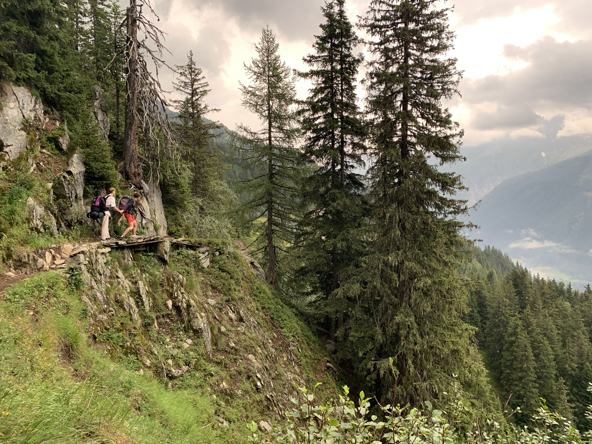
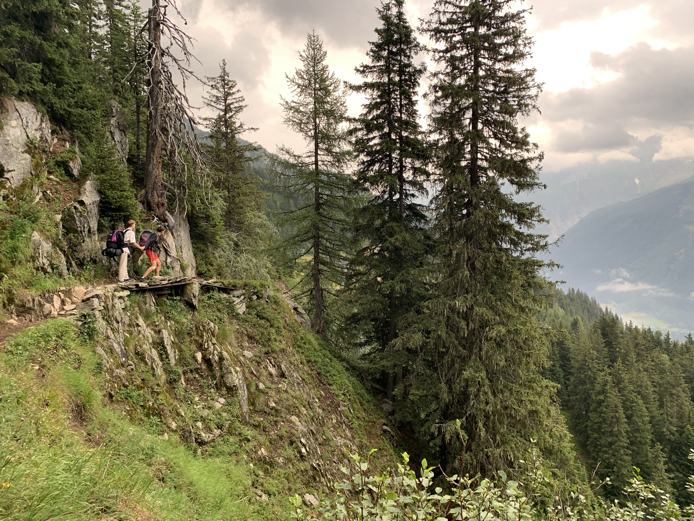
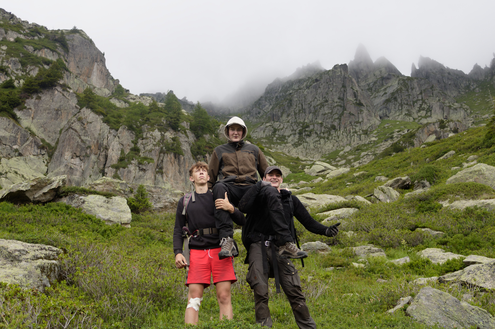
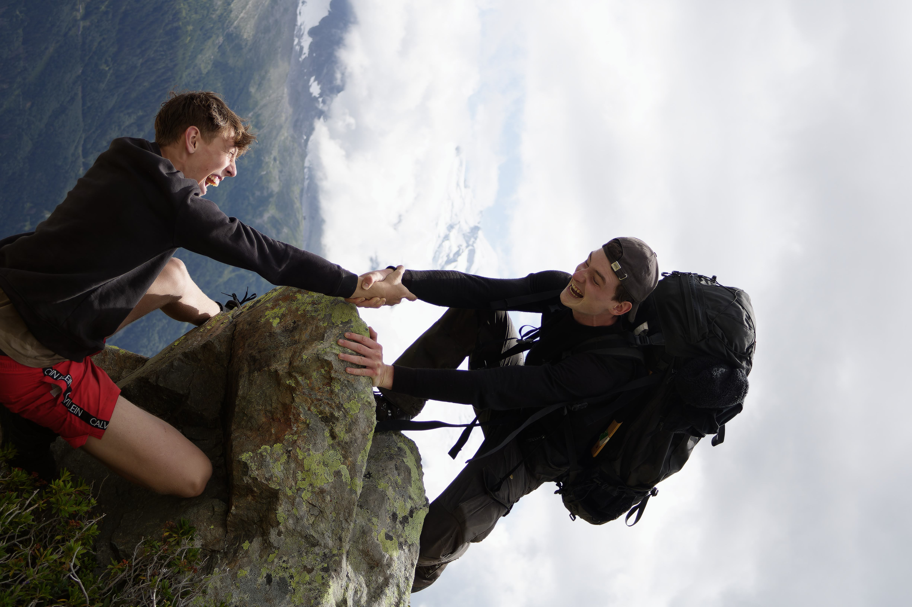
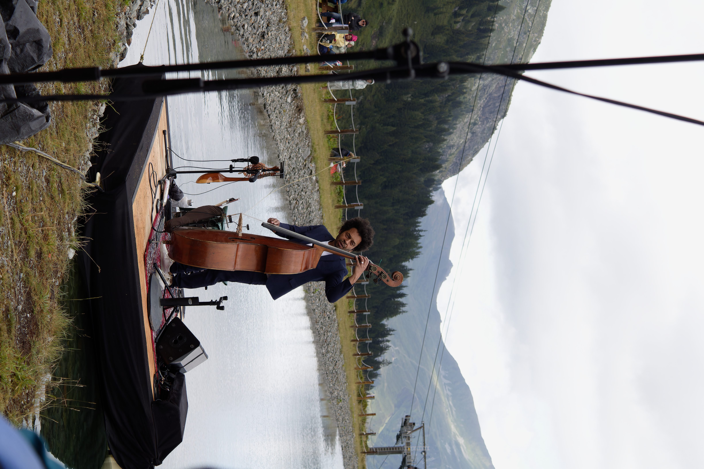

Efter et halvt års nøje planlægning,
drager vi afsted mod det flotte franske bjerg - mounte blouanc.
Kendt som måske den flotteste bakke i nordfrankrig. Vi begynder vandringen tidligt om morgenen med kurs mod toppen, med hver især 15 kg på ryggen (bortset fra Valdemar).
 

En yderst flot del af ruten gik stien langst en meget stejl skrænt i kanten af træerne. Så stejl at der på ruten var stier og broer. En del af ruten blev Oliver meget bange og tog min hånd, mens jeg ledte ham til den anden side af broen

Efter at have vandret længe i det hårde bjergområde var Valdemark den første som gav ind. Valdemar lider også af klumpfod og alfahanerne bar ham derfor til tops

Blot sekunder fra at jeg glider på de farlige glatte sten rækker jeg en hånd mod bjørns og han reder mig fra den sikre død!

I bjergene lever et yderst sjællent kreatur - jazzmusikeren. Vi var så heldige at opleve denne jazzmusiker i fuld gang med at lave støj.